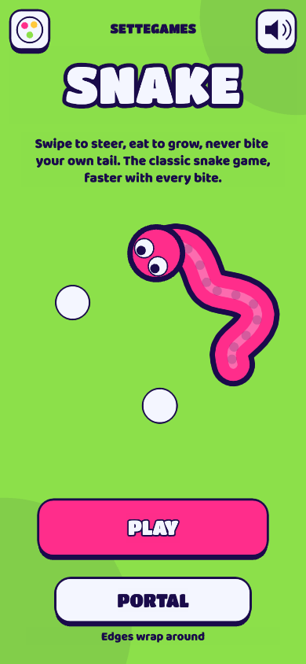

Minigame · free in your browser
Play Snake online
Swipe to steer, eat to grow, never bite your own tail. The classic snake game, faster with every bite.
Free, no sign-up, right in your browser. Also on Telegram: @SetteGamesBot.
Weekly leaderboard
| Play to get on the leaderboard. |
More games
 2048Swipe, merge equal tiles and build 2048. One more move, always.
2048Swipe, merge equal tiles and build 2048. One more move, always. Three Seconds FlatStop the timer at exactly 3 seconds. Five quick rounds, and in Blind mode the dial goes dark after 1 second.
Three Seconds FlatStop the timer at exactly 3 seconds. Five quick rounds, and in Blind mode the dial goes dark after 1 second. Seven SecondsStop the timer at exactly 7 seconds. Three rounds, and the dial goes dark halfway.
Seven SecondsStop the timer at exactly 7 seconds. Three rounds, and the dial goes dark halfway. Perfect TimerStop the timer at exactly 10 seconds. Easy, until the timer disappears.
Perfect TimerStop the timer at exactly 10 seconds. Easy, until the timer disappears.How to play Snake
Snake is the classic arcade game: steer a hungry snake around the grid, eat food to grow longer and try not to crash into the walls or your own tail. Every bite makes the snake a little faster. Play the Classic mode with solid walls or the Portal mode, where the edges wrap around. Free in your browser and on Telegram, no download and no sign-up.
- Swipe anywhere on the screen to turn the snake (on a computer use the arrow keys or WASD).
- Eat the white food to grow: every bite is worth 10 points.
- Every fifth bite a golden treat appears for a short time: grab it for 50 points before it fades.
- In Classic mode the walls are deadly; in Portal mode you come out on the opposite side.
- The game ends when the snake hits a wall or bites its own body. Then beat your best or challenge a friend.
FAQ
Is this snake game free?
Yes. You can play every mode for free in your browser or on Telegram. The only optional purchase is a pack of color themes, which is purely cosmetic and never changes your score.
Do I need to download anything?
No. The game runs in any modern browser on phones, tablets and computers. No app and no account are needed.
How do I control the snake?
Swipe in the direction you want to go. You can swipe twice quickly to queue two turns. On a keyboard, use the arrow keys or W, A, S, D. The snake can never turn straight back on itself.
What is the difference between Classic and Portal?
In Classic the edges of the grid are walls and touching them ends the game. In Portal the edges wrap around, so you can only lose by biting your own tail.
Any tips for a higher score?
Stay close to the walls and move in wide loops so your tail leaves open space behind you. Plan your next turn early, because the snake speeds up with every bite. Go for the golden treat only when the path is safe.
Is there a leaderboard?
Yes. Every game is checked on our server and the best scores of the week appear on the result screen. You can also send a challenge link to a friend.
Do I need an account?
No. On the leaderboard you appear with an anonymous name (an animal and a number). We do not collect personal data.
Is it free?
Yes, it is free to play. Inside Telegram you can optionally buy cosmetic color themes (they never change scores): see the Terms.